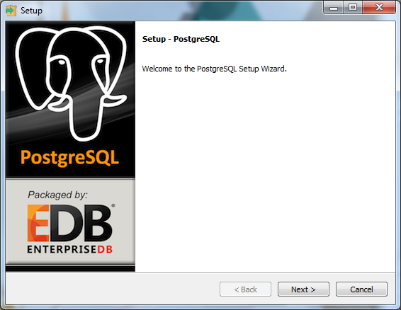
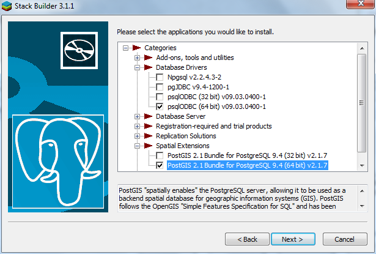
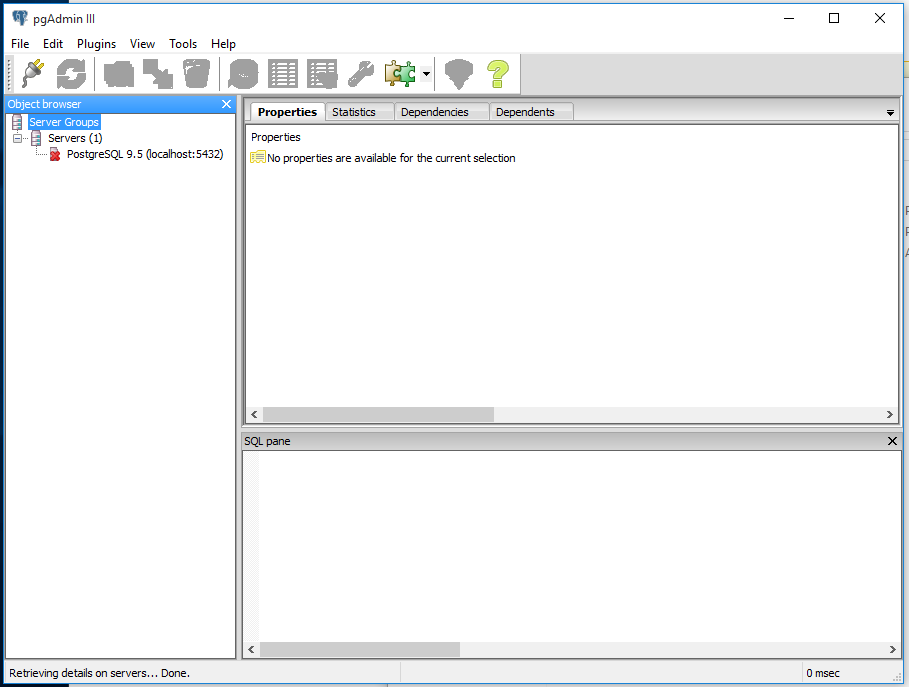

This page gives instructions to install the latest versions of the necessary software for the workshop:
If you already have PostgreSQL installed: if you installed using the EnterpriseDB process below, use the Application Stack Builder to check/update your PostgreSQL/PostGIS versions to 9.5+ and 2.2+, respectively. If your PostgreSQL version is up-to-date but you need to update pgAdmin3, find the newest version here.
Start your installation by downloading the latest stable (non-beta) version (currently 9.5.x) for your system from EnterpriseDB, and follow the instructions. Note that the version in the screenshots below is 9.4, your version will likely be newer (9.5 or above). Run through the installation wizard for PostgreSQL.

You can accept all defaults during the installation, but make sure to remember the password you assign to the superuser (postgres)! You will need this to login to the database server. Once PostreSQL is installed, you also have to install PostGIS and psqlODBC drivers, as shown in the screenshots below.
Note: Your PostGIS version will be newer (likely 2.2) than shown in the image below.

Run through the installations psqlODBC and PostGIS, allowing PostGIS to set the environmental variables and out-of-db rasters. Once finished with the installs, skip to the section below on verifying your install.
Start your installation by downloading the latest stable (non-beta) version (currently 9.5.x) for your system from EnterpriseDB, and follow the instructions.
To start the installer, open a terminal and log into root: su root.
Then simply run the downloaded file, and follow the instructions in the terminal.
See below for user setup instructions.
Note: using this option, postgresql/postgis versions may vary depending on your Linux distribution and version.
Update the package manager and install postgresql:
sudo apt-get update
sudo apt-get install postgresql-9.5 postgresql-client-9.5Then install Postgis and pgAdmin3:
sudo apt-get install postgis pgadmin3The postgresql installation creates a new user, postgres. If you want to log in using your system user credentials, you can create a database user/role with the same name (and password) using the createuser command in the terminal.
First, switch to the root, and then postgres user:
su root
su postgresThen create the new user and follow the instructions. If you are the primary database user it is recommended to match the username/password to your Linux username/password, make them a superuser, and allow them to create databases and roles. Then you can log in to the database with the same credentials you use for Linux.
createuser --interactive -P
Enter name of role to add: user1
Shall the new role be a superuser? (y/n) y
Shall the new role be allowed to create databases? (y/n) y
Shall the new role be allowed to create more new roles? (y/n) yOnce finished with the install, open up the program pgAdmin3:

Right click on the the server PostgreSQL 9.5 (localhost:5432), and click Connect. Now you will log in as the postgres user, using the password you assigned in the install process.
Once you are connected, expand ‘Databases’ and click on the postgres database (this is a default database created with the installation process). With it highlighted, open up an SQL window by clicking on the SQL button.

Now type the commands as shown below in the SQL window, and then click the ‘Execute query’ button. If you see a result (in the Output pane of the SQL window) similar to that shown in the example below, you have successfully installed PostGIS! If you receive any errors, go back to the Stack Builder (as described above) and check your installed software, and if necessary install/update PostGIS.

Windows users can install both QGIS and GDAL with the OSGeo4w installer. Download the network installer here, and run it, selecting the Express Desktop Install, then install QGIS and GDAL (you can un-select the other options).
You can download and run the “Current” version QGIS installer from here. This .dmg file includes a set of four packages (inlcluding GDAL complete) which need to be installed, the last of which is QGIS.
GDAL and other necessary packages can be installed from the repository using the package manager:
sudo apt-get install gdal-bin
sudo apt-get install libproj-dev
sudo apt-get install libgdal-devTo install QGIS, it is recommended to follow the instructions here specific to your distribution.
If you already have R installed: it is recommended to update your R version for this workshop, so that everyone is using a newer version (3.3.0 or above at this time) for the workshop. To check the version you are using, run the command R.Version()$version.string in R. On Windows and OS X, the preferred method to update R is to uninstall R first, using the typical uninstall method for your system (e.g, in Windows, go to Control Panel -> Programs and Features). Your installed packages should not be deleted during the install, and you can transfer them to the new version using the method described further below.
Installers for all systems can be found at here, which will guide you through the install process.
Once the new version is installed, open it and try to install a package (e.g., run install.packages('raster')). R will ask you to create a new folder to store user packages, if you don’t have permissions on the default package library. Note the location of the new folder R creates, install the package, and then close R. If this is a new install of R, you can skip to the RStudio section.
If you had a user library for your packages from the previous version and want to use them in the new version, locate the folder containing these packages (e.g., in Windows, it is generally found at C:\Users\YOUR_USERNAME\Documents\R\win-library\x.x, where the new one should also be). Copy the packages from the this folder to the new version’s folder. Then open R, and run update.packages(checkBuilt=TRUE, ask=FALSE) to update these packages to their newest versions. If R is not finding your new user library, you can also check/set all the folders R looks for packages in by running .libpaths()).
Installers for Windows, OS X, and several Linux distributions are available here. Even if you already have RStudio installed, it is recommended to download the newest version, which will work best with the newest R version. There is no need to uninstall the previous version first.
To start with, the devtools package will be necessary to install packages developed in the lab. Install it first by opening R, and then typing in the command line:
install.packages("devtools")To connect PostGIS and R, four packages are useful:
RPostgreSQL: provides a standard connection from R to PostgreSQL;rgdal: access to the GDAL library from R;rgeos: access to the GEOS library from R;rpostgis: various functions to interact between R and PostGIS.To install them, open R, and type in the command line:
install.packages(c("RPostgreSQL", "rgdal", "rgeos"))
library(devtools)
install_github("mablab/rpostgis")Run install.packages('rgdal','rgeos') in R to install or update the two packages. After installation, load each library:
library(rgdal)
library(rgeos)Note the messages after loading each package. If GDAL and GEOS (two system packages for handling GIS data which were installed in the steps above) are installed correctly, after loading rgdal, you should see something like:
rgdal: version: 1.1-7, (SVN revision 612)
Geospatial Data Abstraction Library extensions to R successfully loaded
Loaded GDAL runtime: GDAL 2.0.1, released 2015/09/15And something like this after loading rgeos:
rgeos version: 0.3-19, (SVN revision 524)
GEOS runtime version: 3.5.0-CAPI-1.9.0 r4084
Linking to sp version: 1.2-3
Polygon checking: TRUEIf the GDAL or GEOS packages are missing, they will need to be installed for the R packages to work correctly. For troubleshooting OS X issues, see the instructions here.
For the analysis of animal tracking data, we often use functions from the adehabitat family which consists of four packages:
adehabitatMA: management of raster maps;adehabitatLT: analysis of trajectories;adehabitatHR: home range estimation;adehabitatHS: habitat selection analysis;hab: habitat selection and movement analyses.Other packages are also necessary for the workshop:
sp: spatial data in R;raster: special package for raster data;lubridate: management of dates/timestamps in R.Let’s install all necessary packages right now:
install.packages(c("adehabitatHS", "raster", "lubridate"))
library("devtools")
install_github("basille/hab")Loading the packages hab, raster and lubridate should show no error:
library("hab")
library("raster")
library("lubridate")